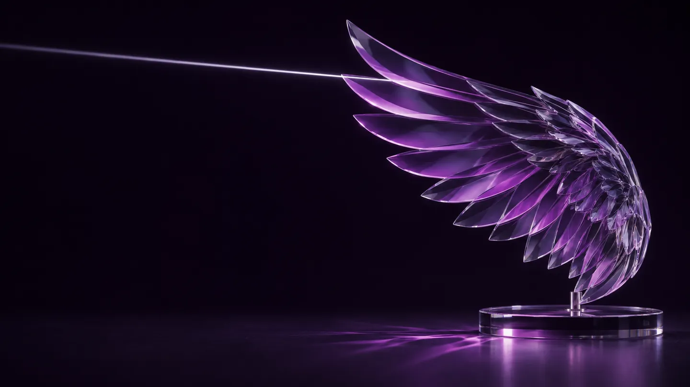

3B model ve görüntüleyici
Supernatural'dan esinlenen, animasyonlu melek kanadı modeli (Blockbench .bbmodel) ve tarayıcıda 3B görüntüleyici. Hayran yapımı.
Hayran yapımı, resmî olmayan bir Blockbench modeli: 150 küp, 81 kemik, 5 animasyon ve 64x64 doku. Dizide kanatlar hiç 3B gösterilmediği için ölçü ve renk resmî bir kaynağa dayanmaz, yorumdur. Model bir Paper eklentisine verilmek üzere hazırlandı ama BetterModel ya da Geyser ile denenmedi. Önizlemeler Blockbench görüntüsü değil, yazarın kendi kinematiğiyle çizilmiş resimlerdir.
Galeri
Gerçek ekran görüntüsü


Olgular
- 150 küp, 81 kemik, 5 animasyon, 64x64 doku
- Animasyonlar: open (1,3 sn), close (1,3 sn), idle (5 sn), hover (3,2 sn), fly (1,6 sn)
- Kanat açıklığı yaklaşık 5 blok (≈ 82 px)
- Ölçü ve renk resmî bir kaynağa dayanmıyor, yorumdur
- BetterModel ve Bedrock/Geyser ile denenmedi
- .bbmodel dosyası betikle yazıldı; Blockbench'te açılıp test edilmedi
- Supernatural ve ilgili adlar hak sahiplerine aittir; depoda diziden görüntü yok
- Tür
- 3B model ve görüntüleyici
- Durum
- Hayran yapımı, resmî olmayan; .bbmodel dosyası Blockbench'te açılıp test edilmedi
- Teknoloji
- Blockbench .bbmodel, JavaScript (three.js görüntüleyici), Python
- Lisans
- MIT